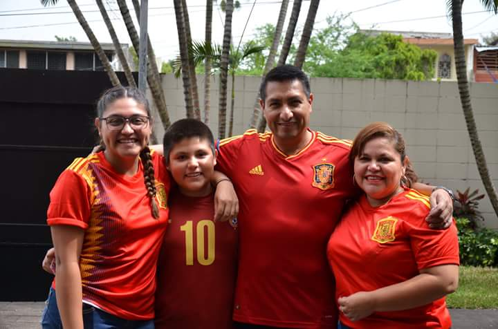
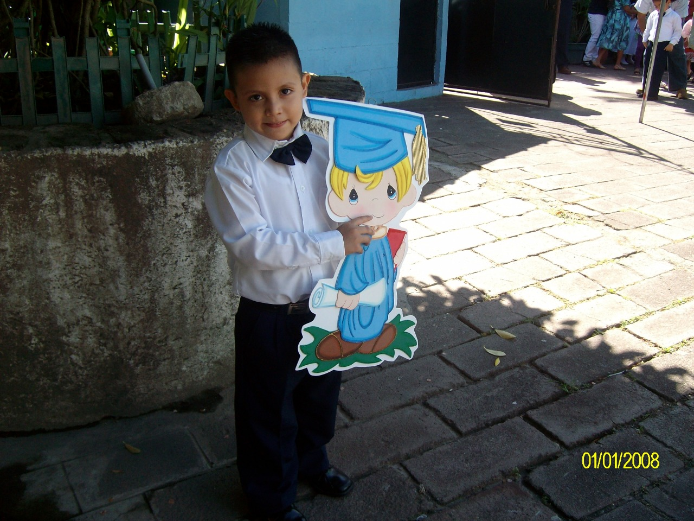
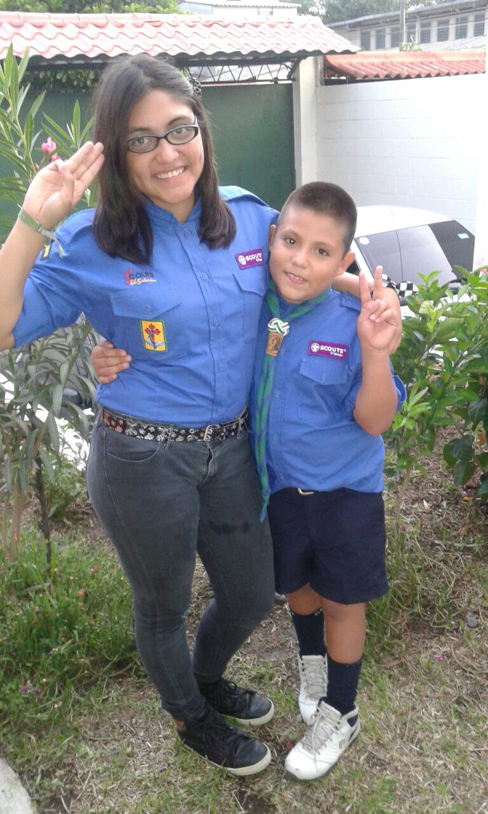
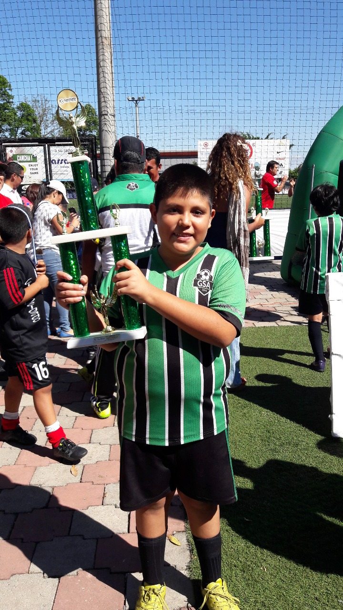
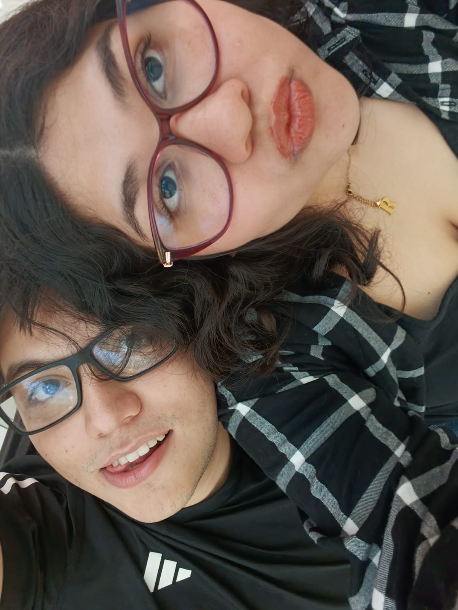
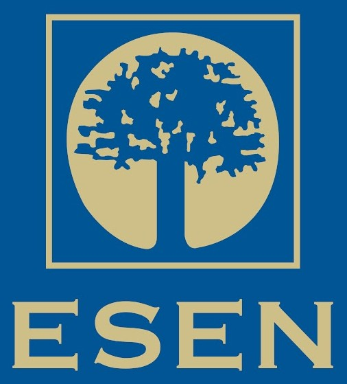

¡Hola! Mi nombre es Roberto Morán. Actualmente tengo 20 años y estudio en la ESEN la carrera de Ingeniería de Software y Negocios Digitales (ISND). Soy una persona algo introvertida, pero disfruto pasar tiempo con mis amigos. Me gusta aprovechar mi tiempo jugando videojuegos, viendo series o videos de YouTube. Me gusta aprender constantemente y siento curiosidad por diversos temas. Pienso que nunca se llega a saber todo y trato de entender el porqué de las cosas.
Mi historia
Nací un día 28 de junio de 2005 en el Hospital Amatepec, ubicado en San Salvador. Mis padres me nombraron Roberto Carlos Morán Gómez, en honor al futbolista brasileño Roberto Carlos. Durante mis primeros años, viví en un apartamento pequeño ubicado en San Jacinto junto a mis papás y mi hermana mayor. Mi abuela materna también vivía en la misma colonia y la visitábamos de vez en cuando.

Mi familia más cercana está compuesta por 4 personas: Mis papás, mi hermana y yo. Mi papá se llama Carlos Morán, mi mamá se llama Claudia Gómez y mi hermana se llama Rocío Morán. Son muy importantes para mí, me han apoyado en todo momento y me enseñaron casi todo lo que sé. Disfruto mucho pasar tiempo con ellos y me considero afortunado de tener una familia así.


Empecé a estudiar a los 3 años en una escuela llamada Centro Escolar Católico Corazón de María. Estuve ahí hasta que terminé mi sexto grado. Luego continué mis estudios en el Instituto Técnico Ricaldone, donde permanecí hasta terminar mi bachillerato. Actualmente, estudio en la ESEN y estoy en mi segundo año de universidad.
Considero que tuve una niñez muy feliz, con momentos que recuerdo con mucho cariño. Cuando tenía cerca de 10 años descubrí algunos de mis hobbies, como los videojuegos, que hasta hoy siguen siendo parte de mi vida. También surgió mi curiosidad e interés por la tecnología. A su vez, pasaba el rato fuera de casa con diferentes actividades. Estuve en el grupo 7 de los Scouts, donde aprendí mucho sobre la naturaleza, y en la escuela de fútbol Gambeta, donde me divertía con amigos y practicaba un deporte que en ese momento me apasionaba.


Durante mi adolescencia también he podido conocer a personas que se volvieron muy importantes en mi vida, como mi novia y amigos que me han acompañado en buenos y malos momentos. Ellos también han sido un gran apoyo para mi y me ayudaron a convertirme en la persona que soy actualmente.


Educación
Instituto Técnico Ricaldone
Estudié en el Instituto Técnico Ricaldone desde séptimo grado hasta mi tercer año de bachillerato. Saqué la especialidad de Desarrollo de Software y durante este tiempo fue en el que empece a entrar en el mundo de la programación y tecnología.
Escuela Superior de Economía y Negocios (ESEN)
Actualmente, me encuentro estudiando en la ESEN. Estoy en mi segundo año de la carrera de Ingeniería de Software y Negocios Digitales. He aprendido muchas cosas nuevas y espero seguir aprendiendo más en los próximos años.